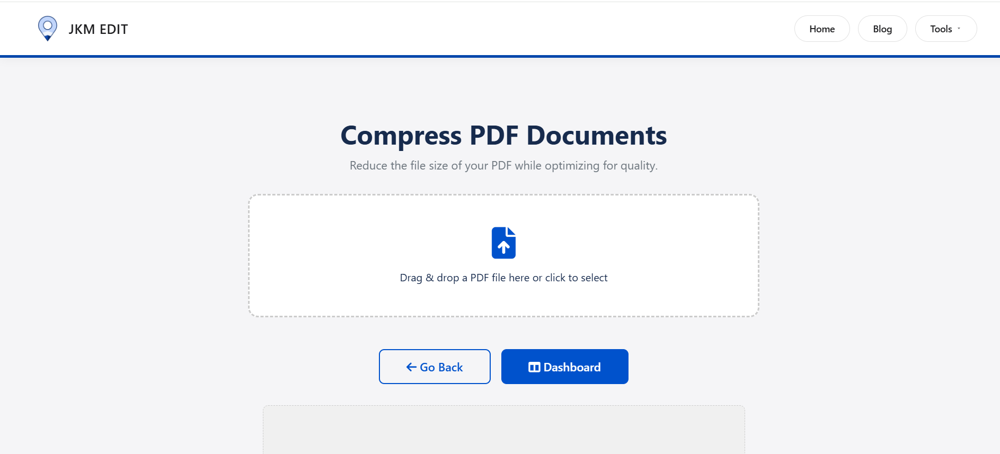
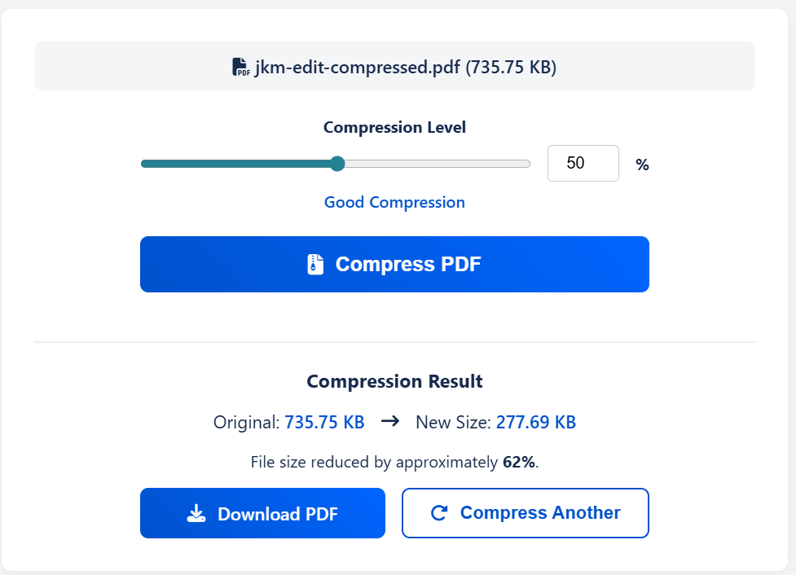
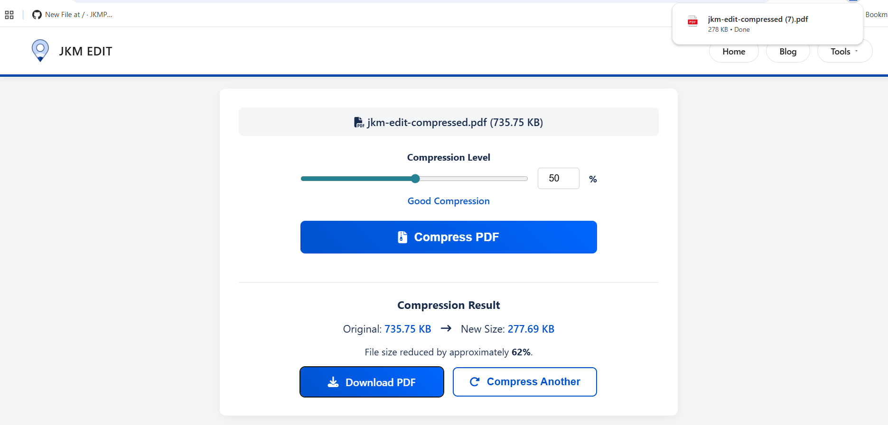
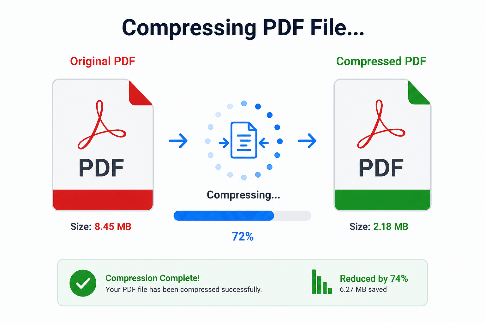

How to Compress PDF Files Online Easily — Complete Guide for Faster File Sharing
Discover the fastest way to reduce your PDF file size for easier sharing, faster uploads, and better storage management without losing quality.

Introduction: Why Compress PDF Files Has Become Essential
PDF files are widely used in today’s digital workflow. Whether it is business reports, student assignments, invoices, scanned documents, or government forms, PDFs are the most common file format for sharing structured information.
However, as usage increases, a major problem appears:
PDF files often become too large to share or upload.
For example:
- A scanned document becomes 20MB+
- A report with images becomes too heavy
- Email platforms reject large attachments
- Government portals have strict upload limits
- Mobile storage gets filled quickly
This is where PDF compression becomes extremely important.
Instead of struggling with oversized files or reducing quality manually, a PDF compressor reduces file size while maintaining readability and document quality.
One of the easiest ways to do this is by using JKM Edit Home and its dedicated Compress PDF Tool.
Unlike complex software or paid tools, JKM Edit focuses on:
- Speed
- Simplicity
- Browser-based usage
- No installation requirement
What Is a PDF Compression Tool?
A PDF compression tool is an online utility that reduces the file size of a PDF document without significantly affecting quality.
It works by optimizing:
- Images inside the PDF
- Fonts and embedded data
- Unnecessary metadata
- Document structure
For example:
- 25MB PDF → 5MB improved file
- Scanned images → compressed readable document
- Presentation PDF → lightweight shareable file
Modern tools also allow lossless compression (quality preserved), lossy compression (maximum size reduction), browser-based processing, and instant downloads. Today, most users prefer online tools because they are faster and do not require software installation.
Common Problems People Face Without PDF Compression
1. Email Attachment Limit Issues
Most email platforms limit file size (usually 10MB–25MB). Large PDFs fail to upload, causing delays and frustration.
2. Slow File Sharing
Large files take longer to upload, download, and send on platforms like WhatsApp or cloud services. This affects productivity significantly.
3. Mobile Storage Problems
Smartphone users often face storage issues due to heavy PDFs, scanned documents, and downloaded high-resolution reports.
4. Government Portal Restrictions
Many online application forms require small file sizes and have specific upload limits (e.g., maximum 2MB). Large PDFs get rejected instantly.
Why PDF Compression Is Important
Better File Management
Compressed PDFs are easier to store, organize, share, and archive.
Faster Sharing
Smaller files transfer quickly across email, WhatsApp, Google Drive, and other cloud platforms.
Improved Productivity
Users save time by avoiding repeated uploads, file rejections, and manual resizing of images before converting to PDF.
Mobile-Friendly Usage
Compressed PDFs are far easier to handle, open, and view on smartphones and tablets.
Why People Prefer Online PDF Compress Tools
Traditional software has limitations: installation is required, it consumes system storage, interfaces can be complex, and processing is often slow.
Online tools solve these issues by offering instant access, browser-based usage, cross-device compatibility, and incredibly fast processing directly in the cloud or browser.
How JKM Edit Solves PDF Compression Problems
1. Simple User Interface
JKM Edit Compress PDF tool is designed for everyone. Upload PDF, click compress, and download. No technical knowledge is required.
2. Browser-Based System
Works directly on desktop, laptop, Android, iPhone, and tablets. No software installation is needed.
3. Fast Processing
The tool is improved for quick compression so users do not waste their valuable time.
4. Quality Preservation
The system maintains readability, formatting, and document clarity while effectively reducing file size.
5. Multiple File Support
Users can compress heavy reports, scanned documents, invoices, massive assignments, and presentations smoothly.
6. Free and Accessible
Unlike many tools, JKM Edit focuses on absolute accessibility, ease of use, and no unnecessary premium restrictions.
Is Your PDF Too Big to Share?
Reduce your file size in seconds without losing document clarity. Perfect for emails and online uploads.
Compress PDF Now Free
Step-by-Step Guide: How to Compress PDF Using JKM Edit
Step 1 — Open the Tool
Visit the official secure link: JKM Edit Compress PDF Tool.

Step 2 — Upload Your PDF
Select the file you want to compress, whether it is a large report, a scanned document, a presentation, or an assignment.
Step 3 — Start Compression
Click the compress button and let the fast browser-based system improve your file.

Step 4 — Download Improved File
Your compressed PDF is ready within seconds. Now you can upload it anywhere, share it easily, and store it without space issues.

Watch Full Tutorial: How to Compress PDF Files Using JKM Edit
Prefer a visual guide? Watch this quick step-by-step video tutorial demonstrating exactly how fast and smooth it is to reduce your document size.
Real-Life Use Cases for PDF Compression
Students
Perfect for assignment submissions, project reports, and sharing massive textbook notes with classmates over messaging apps.
Businesses
Essential for sending financial reports, client documents, and internal files without hitting email bounce-backs.
Freelancers
Great for sending portfolios, proposals, and project submissions to potential clients smoothly.
Government Applications
Crucial for successfully uploading identity documents, application forms, and certificates to portals with strict size limits.
Benefits of Using JKM Edit Instead of Traditional Tools
| Feature | Traditional Software | JKM Edit |
|---|---|---|
| Installation Required | Yes | No |
| Speed | Moderate | Fast & Instant |
| Mobile Use | Limited / Clunky | Fully Supported |
| Ease of Use | Complex interfaces | Simple & Clean |
| Browser Access | No | Yes |
| Cost | Often Paid | Free Access |
Privacy and Security in PDF Compression
Users often deal with sensitive files like bank statements, contracts, and personal documents. JKM Edit ensures browser-based processing for a smoother, safer workflow experience, prioritizing user data privacy.
Why Fast PDF Compression Matters
Modern users expect instant results, zero waiting time, and a smooth workflow. Slow tools reduce productivity and increase frustration, which is why an improved cloud-based approach is strictly necessary.
Mobile PDF Compression Is Growing Rapidly
Mobile users now prefer fast browser tools instead of app installations for instant sharing. JKM Edit supports full mobile compatibility across all modern devices.
Best Practices While Compressing PDFs
- Avoid Unnecessary Scans: Avoid high-resolution scans if the document is primarily text.
- Remove Unused Pages: Use a Split PDF tool to remove extra pages before compressing.
- Keep Backups: Always keep a backup of the original high-resolution file just in case.
Future of PDF Compression Tools
Future tools will continue to focus on AI-based optimization, faster browser engines, and automatic compression workflows directly built into daily apps. Web-based productivity is undoubtedly the path forward.
Frequently Asked Questions (FAQs)
Yes, using modern online tools like JKM Edit, you can compress PDF files and reduce document sizes completely free without hidden charges.
No. JKM Edit uses advanced optimization techniques to heavily reduce the file size while preserving text clarity and image readability so documents remain professional.
Absolutely. The JKM Edit Compress PDF tool is fully responsive and works entirely in your mobile browser, requiring no app installation on Android or iOS devices.
Yes, JKM Edit processes your documents securely directly through the web tool, prioritizing your privacy and ensuring your sensitive data remains safe during handling.
Size reduction varies based on the file content (like high-res images vs standard text), but users frequently see a massive 60% to 80% reduction in overall file size.
Final Thoughts
PDF compression is no longer optional — it is a daily necessity for students, professionals, and businesses.
Instead of struggling with large files, failing email uploads, and restricted portal submissions, users can quickly improve documents using the JKM Edit Compress PDF Tool.
With a simple, fast, and browser-based workflow, JKM Edit makes PDF compression easy for everyone. Explore JKM Edit Home for more professional document management tools.

Take Control of Your Documents
Experience the easiest, fastest, and most secure way to reduce your PDF file size. No installation required.
Compress PDF Now